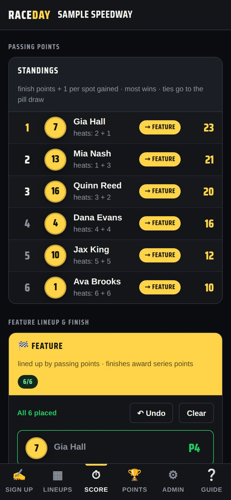

New for race night
The whole crew, on the same night.
Tech, the pay window and the announcer's booth run off the same lineups and results as everyone else — no second system, no retyping.

Tech inspection
A checklist, weight and Pass / Fail / Recheck for every car. Run it on a tablet in tech; the tower sees results instantly.
Tech guide →
Payouts
Set a purse per class and RaceDay works out who’s owed what — driver or car owner — then keeps a paid/unpaid ledger and season totals for 1099s.
Payouts guide →
Announcer screen
The race on track in starting order, with sponsors, hometown, career record and points rank for every driver. It follows the night by itself.
Announcer guide →
Passing points
Score heats by finish plus spots gained, and give any class its own points table — the way your series actually runs.
Formats guide →